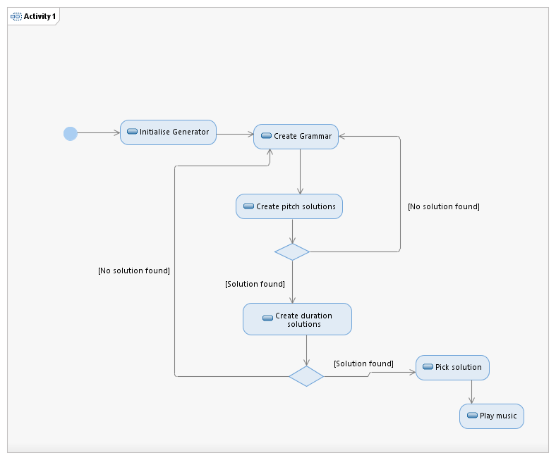

The Music Generation Process
The Phrase_Generator module is designed to take a GrammarContainer object as an input and generate EventStream objects as outputs. EventStream objects are used by the Music_Generator to encapsulate a stream of music, which is comprised of AttackEvents and RestEvents. This document provides an overview of the music composition process of the system.
At the time of writing, the Phrase_Generator module has been designed to produce musical phrases as solutions to the input musical grammar. As such, it is not yet suited to generating music with a broader musical structure. A futher module may be implemented in the future that is able to make use of phrases generated by the program and incorporate them into a broader structure,
Music Generation Process:
The PhraseGenerator class provides two methods for use in constructing musical phrases. Both generate music in the same way:
- 1. the NoteGenerator class is used to randomly choose a key for the phrase by calling the 'createRandomDiatonicScale()' method.
- 2. the PitchGenerator class is called to generate multiple candidate chains of AttackEvent objects according to the pitch constraints of the time-span reduction, prolongational reduction, and grouping structure preference rules. This is done in the following order:
- 2.1 the PitchGenerator's 'getCandidatePitchChains()' method is called by the PhraseGenerator with the randomly chosen Scale object from step 1 given as a parameter value.
- 2.2. the PitchGenerator randomly chooses a position between 2 and 6 and creates a Key object with the tonic of the input Scale object and the chosen position. This acts as the prolongationally most important pitch for use in deriving prolongational structure solutions.
- 2.3 For each branch of the prolongational reduction, the PitchGenerator checks through all of the possible pitches between position 1 and 8 to see which ones form a preferable relation to the prolongational end pitch (established in 2.2.) This is done in the following way:
- 2.3.1 For each branch of the prolongational reduction, each KeyLetterEnum in each KeyPositionEnum is used to create a AttackEvent object and the ProlongationalReductionAnalyser's assessPRPR3() method is used to assess how strongly each AttackEvent forms a branching relation to the prolongational end pitch (from 2.2.). If a pitch forms a preferable relation (i.e. above 0.5 in rating) then it is added to a list of potential candidate pitches.
- 2.3.2 When all pitches have been assessed, the list of candidate pitches is mapped to the Beat object associated with the branch under consideration. The next branch of the prolongational reduction is then considered and 2.3.1 through to 2.3.2 is repeated until all branches have been considered.
- 2.3.3 The Beat associated with the top prolongational branch is mapped against a list of one Key, which contains the prolongational end point key.
- 2.3.4 The map is then filtered such that at each successively lower level candidate pitches are filtered out according to their rating. I.e. if a branch is at a high level, its list of candidate pitches will be filtered of pitches which have a relatively low rating. A branch at a low level will have its list filtered of pitches which have a relatively high rating. This reflects the fact that branches at high levels have a higher preferable relation to the prolongational endpoint than branches at a lower level.
- 2.4. the map of Beats against lists of candidate pitches is then processed using recursion to generate all the possible combination of pitches. These are referred to as 'chains', and are encapsulated as a Map. After generating such a combination of pitches, the chain is sent to a method to check whether it fits various constraints. If the chain fits the constraints, it is added to a list of candidate chains.
The constraints that a chain must satisfy are:
- 1. The two Beat objects which represent the CadenceTimeSpanBranch cadenceEnd and cadenceStart beats are checked to see whether the pitches they map constitute a cadence. In this implementation, the pitches are check to see if they form a dominant-to-tonic relation (V-I) or a tonic-to-dominant relation (I-V).
- 2. The prolongational reduction structure is checked to see whether all the mapped pitches fit the branching type constraints. e.g. a branch that is of type progression should not be the same pitch as the pitch its parent branch is associated with (and prolongation types are checked to ensure they are of the same pitch).
- 3. The time span reduction structure constraints TSPR2 and TSPR3 to ensure that each sub-branch forms a preferable relation to its parent branch. This uses the TimeSpanReductionAnalyser class' rating system.
- 4. The grouping structure GPR3a constraint is checked to see whether pitches at boundaries of the grouping structure have a higher intervallic distance between them than those not at the boundaries, and vice versa for those not at boundary points. This uses the GroupingStructureAnalyser class' rating system.
(Each of these testing stages are optional, and can be switched on and off by manipulating the public static final boolean functions at the top of the class)
2.5 The list of candidate chains is returned to the PhraseGenerator class.
3. The DurationsGenerator is used to generate candidate durations for possible musical events using the constraints of the metrical preference rules and grouping preference rules.
- 3.1 a solution that best fits the metrical structure is generated. This is calculated by establishing the relative metrical strengths of all the pitch values. Relatively strong pitch beats are assigned relatively long durations, and relatively weak pitch beats are assigned relatively short durations. Beats which are contained within the durational span of pitch beats are assigned a null value, else the are assigned the lowest durational value to indicate that they may constitute rests.
- 3.2 Based on the GPR2a,b, and GPR3d constraints, candidate chains of durations are mapped for all pitch beats and beats surrounding pitch beats. These candidate chains do not necessarily map the whole metrical structure, only those parts of the metrical structure that surround and include pitch beats.
- 3.3 the candidate duration chains from 3.2 are compared with (and merged) with the metrical structure solution of 3.1. This creates multiple different variations of duration solutions. Each solution is paired with an integer denoting how closely the solutions matches the metrical structure solution (a higher number indicating a greater match).
- 3.4 Combinations of the candidate duration solutions and the pitch chain candidates from stage 2 are created recursively and checked for corroboration with the GPR3 and GPR2 rules. Any candidates that show non-preferable ratings are discarded. The candidate combinations are then returned to the PhraseGenerator.
4. The PhraseGenerator may either select a candidate at random or use the RatingsGenerator to provide ratings for each solution. In each case, the map of Beat objects to Event objects is concerted into an EventStream. The EventStream is able to be passed to the Player class for use in playing the generated music.
